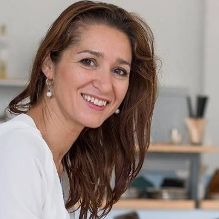
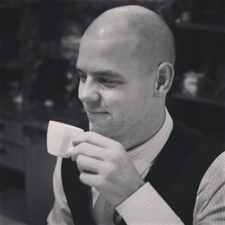
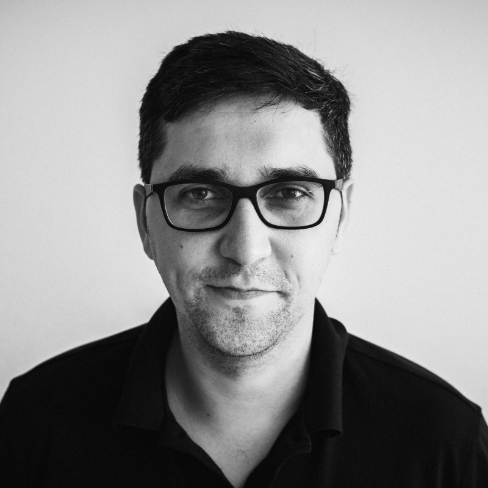

Performance & Reporting specialist

Kromě správy reklam se naplno věnuji datové automatizaci a propojování systémů (PPC, GA4, CRM). V Google Sheets tvořím výpočetní modely a v Looker Studiu vizualizuji výkonnost. Mým cílem je budovat pro klienty „jeden zdroj pravdy“. Analýzou tržních trendů a velkých dat generuji strategické insighty, které reálně posouvají byznys našich klientů vpřed.
Zobrazit klíčové projekty a insighty ▼
📊 Analýza trhu a hledanosti
Měsíčně stahujeme a ukládáme data o hledanosti z Googlu. Předdefinuji celý trh (kategorie, konkurence, marketplaces). Díky tomu vidíme, zda rosteme spolu s trhem, nebo ztrácíme podíl, a máme v rukou tvrdá data pro další strategii.
💡 Strategické přesahy
Díky velkým datovým přehledům se mi daří nacházet klíčové příležitosti. U jednoho klienta jsme např. odhalili hromadný přesun zákazníků na marketplaces, což vedlo k okamžitému testování zalistování jeho produktů přímo tam.
🔗 Komplexní integrace
Nejde jen o základní metriky. Do ucelených dashboardů umím dostat i výsledky dotazníků nasazených na webu nebo data o zdraví produktového feedu, čímž získáváme absolutní kontrolu nad celým nákupním procesem.
Head of PPC team
Měl jsem na starosti vedení týmu 3 specialistů a koordinaci marketingových aktivit pro 9 firem ve 30 zemích světa s hlavním cílem: pomáhat českým firmám růst v zahraničí. V sezóně jsem spravoval rozpočty ve výši až 1,25 milionu Kč denně, přičemž cílem byl vždy zdravý meziroční nárůst (10–20 %) v kontextu vývoje daného trhu.
Klíčové úspěchy
📺 Synergie TV a Onlinu
Spolupracoval jsem s klienty při masivních televizních kampaních. Onlinem jsme maximalizovali dosah TV reklamy, měřili nárůst povědomí o značce a pomocí pokročilého remarketingu jsme efektivně vytěžovali skokově zvýšenou návštěvnost webu.
🎓 Rozvoj týmu
Kromě samotného nastavení procesů jsem se intenzivně věnoval mentoringu. Prostřednictvím cílených školení, pravidelné zpětné vazbě a každotýdenní společné práci na prioritách jsem z juniorních podřízených vychoval plně samostatné seniory. Ti následně převzali kompletní běžnou operativu pod křídly majitelů firmy.
🎯 Přesah do dalších oborů
Místo pouhého výkonnostního marketingu a podpory brandu jsem řešil i mimooborové přesahy. U velkého fashion e-shopu jsme např. úpravou zobrazování slev znásobili konverzní poměr.
PPC specialist
Zde jsem získal své pevné základy ve správě výkonnostních kampaní napříč platformami (Google Ads, Microsoft Ads, Facebook, Instagram, Sklik, TikTok) a naučil se komplexně přemýšlet nad celou zákaznickou cestou.
Klíčové zkušenosti
🌍 Globální expanze
Řídil jsem kampaně pro celý svět (software pro školky). Získal jsem cenné lekce ze specifik různých trhů, a to od překvapivě výkonné africké Nigérie až po Mexiko, kde kampaně generovaly ohromné množství leadů.
🚀 Konverzní Landing Pages
Rychle jsem pochopil, že samotný traffic nestačí. Začal jsem se proto aktivně učit, jak navrhovat a optimalizovat vysoce konverzní vstupní stránky, které návštěvníky z reklam reálně přetaví v zákazníky.
✍️ Synergie obsahu a PPC
U segmentu krmiv pro zvířata jsem prokázal, že dobře cílené blogové články mohou tvořit velkou část obratu. Kolem těchto článků jsme následně budovali celou kampaňovou strukturu.
Senior CRM Specialist
Komplexní end-to-end řízení strategických CRM kampaní (hotovostní půjčky, konsolidace, revolvingové úvěry) s měsíčním zásahem v řádech desetitisíců klientů a správou rozpočtu okolo 1 mil. Kč měsíčně. Zodpovědnost za celý životní cyklus kampaně – od úvodní analýzy, výběru klientů a nastavení obsahu, přes exekuci a A/B testování, až po reporting a prezentaci výsledků představenstvu.
Klíčové zodpovědnosti a dovednosti
- Databázový marketing: Selekce klientů v nástroji SAS (moje kampaně sloužily jako best practice vzory pro zaučování nových kolegů).
- Analytika a reporting: Vyhodnocování v Excelu, SQL a Tableau; mapování zákaznických cest, psaní business casů a finanční plánování.
- Spolupráce s odděleními: Úzké vyjednávání s odděleními řízení rizik, produktu, analytiky, marketingu, klientského call centra a telemarketingu.
- Koordinace call centra: Řízení kapacit, náslechy hovorů a úprava call skriptů – inicioval a vedl jsem rozsáhlé školení o tvorbě kampaní pro desítky operátorů.
Největší úspěchy a projekty (Impact)
📈 Inovace produktů
Transformoval jsem upsellový produkt s nízkou marží na vysoce ziskové produkty, které skloubily velké objemy, vysoký konverzní poměr i marži.
🎯 Optimalizace prodeje
Spolupracoval jsem na transformaci prodeje sloučením nabídky hotovostní půjčky a konsolidace do jednoho touchpointu. Tahle změna prokazatelně zvýšila konverzní poměr díky řešení více klientských potřeb najednou.
🚀 Launch nového klientské cesty
Sám jsem navrhl, vytvořil a naimplementoval kompletní onboardingový proces pro nový revolvingový produkt. Pomocí A/B testingu v telemarketingu se mi podařilo maximalizovat jeho vyčerpanost.
🤖 Skóringové modely
Byl jsem klíčovým členem týmu při nasazování matematických modelů pro cílení kampaní. Manuálně jsem definoval podmínky pro učení modelů a úspěšně A/B testoval expertní výběr.
📊 Proaktivní analytika
Pro nezávislost na analytickém oddělení jsem se naučil SQL, napojil Excel přímo na datový sklad a plně zautomatizoval reporting a analýzu výsledků mých kampaní.
⚙️ Oslovovací matice
Ve spolupráci s oddělením řízení rizik jsem zautomatizoval tvorbu báze oslovitelných klientů pro cross-sell a úspěšně testoval a zapojil do pravidelných kampaní semi-eligible klienty s vysokým konverzním potenciálem.
Moje motivace 🔥
Proč chci být součástí vašeho týmu a co vám mohu přinést.
🎯 Znalost z pohledu zákazníka
Co považuji za svou obrovskou konkurenční výhodu? Vaše prostředí znám naprosto dokonale z té nejdůležitější perspektivy – přímo z pohledu vašeho koncového zákazníka.
Jako táta malé dcerky trávím na hřištích a prolézačkách podstatnou část svého volného času. Vím přesně, co děti i rodiče ocení, co na ně reálně funguje, jaké emoce při návštěvě prožívají, ale také dokážu dobře identifikovat případná slabá místa a prostor pro vylepšení. Rád bych tuto svou osobní a zcela autentickou zkušenost přetavil do obchodních a marketingových výsledků z druhé strany barikády.
🏢 Touha po in-house roli a dopadu
Delší dobu mě už silně láká možnost posunu z agenturního prostředí přímo do in-house týmu. Práce v agentuře je sice skvělá škola, která mi dává obrovský rozhled a zkušenosti s desítkami různých projektů a strategií, ale začínám postrádat možnost ovlivňovat byznys od A do Z.
Chci vidět hlubší, dlouhodobý dopad své práce na vývoj jedné konkrétní firmy. Chci být u zrodu strategické myšlenky, přes její realizaci až po finální vyhodnocení a další rozvoj.
„Když jsem pak uviděl vaši nabídku, doslova jsem si řekl: WOW! Vždyť já veškerý svůj volný čas teď trávím na hřištích. A co kdybych se jim mohl naplno věnovat i v práci?“
Spojit svou profesní odbornost s něčím, co mi dává osobní smysl a reálně mě to baví, je pro mě ten největší hnací motor. Jsem přesvědčen, že kombinace mé motivace, letitých zkušeností v marketingu a perfektní znalosti vaší cílové skupiny ze mě dělá ideálního kandidáta na pozici marketingového specialisty.
Pokud jsem vás zaujal, velmi rád s vámi proberu své nápady i osobně. ☕
Co o mně říkají klienti a kolegové 💬
Přečtěte si, jak naši společnou práci a výsledky hodnotí lidé z praxe.
S Richardem byla spolupráce na rozšiřování aplikace Twigsee do zahraničí úžasnou zkušeností. Jeho nápady a proaktivní přístup byly nepostradatelné při objevování nových trhů. Vedli jsme PPC kampaně, které jsme pravidelně optimalizovali. Navíc jsme obdrželi cenné rady ohledně struktury landing pages. Richarda mohu vřele doporučit na profesní i osobní úrovni. Pokud potřebujete spolehlivost, zodpovědnost, proaktivitu a výkon, Richard je tím pravým člověkem.

Když e-shop KrmímKvalitně.cz spolupracoval s agenturou ULab, byl to právě Richard, kdo měl KK na starost. Byla to velmi příjemná a opravdu výkonná spolupráce. Kampaně pod jeho vedením splňovaly domluvené cíle a Richard sám přicházel s nápady a návrhy co ještě můžeme udělat navíc, co vyzkoušet, co by mohlo přinést ještě víc...takže za KrmímKvalitně určitě doporučujeme a děkujeme za skvělou spolupráci.

S Richardem jsem spolupracovala řadu let a byla u jeho profesního růstu z juniorní pozice do pozice samostatného seniorního campaign managera. Do práce přinášel nové nápady, byl výjimečný svou kreativitou, flexibilitou, samostatností i týmovou prací. Spolupráce s ním byla radost a budu jedině ráda, pokud se naše profesní cesty v budoucnu opět protnou.

S Richardem jsem se poznal po nástupu do XM.cz. Hned od začátku jsem uvítal jeho pro-aktivitu a přístup k vedení kampaní. Vždy dodržoval stanovený plán PNO a pokud se něco stalo, bleskově vše vysvětlil. Když jsem se potřeboval na něco zeptat či zavolat, nikdy to nebyl problém. Díky Richardovi jsem se dozvěděl a naučil spousta užitečných věcí z oblasti mailingu, PPC a GA. Pokud hledáte někoho na správu PPC na Google, Seznamu či FB, tak je Richard ten správný člověk.
S Richardem jsme se poznali ve firmě Home Credit, kde jsme se podíleli na řešení nestandardních požadavků zákazníků. Jeho výjimečné nápady, brilantní logika i maximální nasazení mne zkrátka přesvědčili, že s tímhle člověkem chci spolupracovat! Já jen doufám, že Richard své špičkové schopnosti uplatní v plánování reklamních strategií nebo v PPC. Právě u těchto projektů se zase můžeme setkat.

Něco málo o mně
Kdo jsem, když zrovna nesedím u tabulek a kampaní.
👨👩👧 Osobní život
Je mi 34 let, jsem manžel a hrdý táta skoro tříleté dcerky. Abych se přiznal, naplno si užívám všechny prolézačky a hřiště, které s ní můžu o víkendech objevovat.
Mojí nedílnou součástí je ale i aktivní společenský život. Velmi rád se setkávám s přáteli a organizace větších skupin, ať už jde o společné víkendové výlety nebo rovnou dovolené, je mi velmi vlastní.
🏸 Zájmy a odpočinek
Když potřebuji dobít baterky a vyčistit si hlavu, jdu si zahrát badminton nebo squash. Mám rád i trochu adrenalinu. Rád jezdím na motorce, v posledních letech jsem projel například velkou část Rumunska a celou Sardínii. A také se aktivně věnuji jachtingu, letos plánuji poprvé vyrazit i na rodinnou plavbu s malými dětmi do Chorvatska. Udržuje mě to v tempu a učí rychle reagovat na nové situace.
📚 Seberozvoj
Mám maturitu na obchodní akademii v Brně a bez problémů se domluvím anglicky. Seberozvoj je obrovskou součástí mého života a neustále sleduji trendy v oboru, abych nestál na místě. Své znalosti si mimo jiné každoročně potvrzuji obnovováním 5 certifikací na Google Ads (Search, Display, Video, Shopping, Data). Rád také sáhnu po dobré knize o marketingu, naposledy mě například velmi oslovila Alchymie od Rory Sutherland.
Pravidelně se účastním marketingových konferencí – loni jsem se například vypravil s týmem na prestižní AdWorld Experience v italské Boloni, u nás v Česku pak pravidelně jezdím na akce jako PPC Restart nebo Mergado Fest. Naše firma navíc organizuje PPC Camp a PPC Barbeque, kde tu a tam rád přiložím ruku k dílu a pomůžu s organizací.
🤖 AI a technologie
Fascinuje mě, kam se svět technologií posouvá. S umělou inteligencí si ale jen nechatuju, aktivně ji využívám k nastavování automatizací. Vytvořil jsem například systém pro automatické stahování novinek ze světa PPC, internetu i sociálních sítí a jejich pravidelné zasílání všem kolegům na firemní e-mail. Mají tak nejčerstvější oborové novinky naservírované zcela bez práce.
Pamatuju také doby, kdy nás při automatizaci procesů v Excelu limitovaly jen naše znalosti nekonečné databáze vzorců. To už dnes díky AI odpadá – jsem díky ní schopen stavět velké databáze, ve kterých se modelují různé metriky a které následně fungují jako jeden spolehlivý zdroj pravdy (propojení více zdrojů do jednoho). S klientem jsme tak schopní daleko rychleji odhalit pravdy skryté v průměrování velkého množství dat.
Není to ale jen o datech, v dnešním světě jsou neuvěřitelně důležité kreativy. Jsem schopný je generovat a upravovat do takové podoby, že se je moji klienti nebojí nasazovat na sociálních sítích.
💻 Jedna zajímavost na závěr: Jak vznikl tento web?
Abych vám dokázal odprezentovat informace o sobě zajímavou formou, ukázal svou motivaci a nezůstal jen u nudných černých písmen na staré A4 v PDF, ponořil jsem se do tzv. „vibe codingu“.
S pomocí umělé inteligence jsem tento web od nuly navrhl a následně přes GitHub zveřejnil. Vzal jsem to jako skvělý experiment: AI psala kód a já zastal roli zadavatele a projekťáka. V praxi jsem si tak vyzkoušel, jak efektivně promptovat, iterovat změny, řešit nečekané zádrhele s verzováním v Gitu a dotáhnout vizi až do nasazení na produkci.
Je to pro mě ten nejlepší praktický důkaz toho, co v textu výše jen tvrdím: když člověk umí efektivně využít dnešní technologie, dokáže rychle zrealizovat naprosto cokoliv.